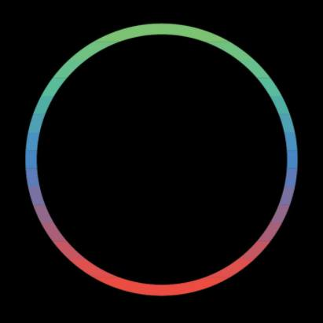

DATES

06.10.2026 MUZIKOS RUDUO FESTIVALIS
Muzikos Ruduo Festivalis - Vilnius - with airkeychains trio. Details tba soon.

12-18.10.2026 European Music Collective Fall Tour
Touring between Düsseldorf, Eindhoven, Liege, Brussels.
What is Contemporary? - Workshop 14th October
This workshop invites practitioners, composers, and critically engaged listeners to collectively reflect on the meaning and role of contemporary music today. Moving beyond a purely chronological understanding of the “contemporary,” the session opens a space to question its aesthetic, social, and political dimensions. What does it mean for music to be contemporary?

